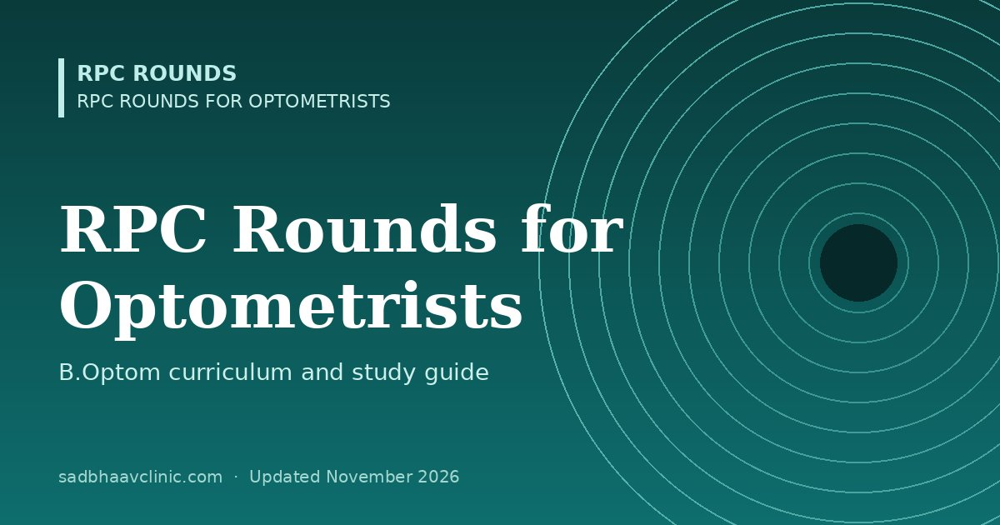

Last updated: November 2026
RPC Rounds for Optometrists is a free study guide for B.Optom and diploma optometry students, following the subjects of the four-year B.Optom course used across Indian universities. Each topic page explains the essentials, adds a practical pearl from the clinic, lists where students slip, and ends with flip cards and a quick quiz. Tick topics off as you revise; progress is saved on your device.
New: four free 50-question mock tests with explanations: B.Optom, NBEO-style (USA), OCANZ-style (Australia and NZ) and Gulf licensing. Also 30 practical and viva stations, a printable case record, working abroad and registration in India.
| Semester | Main optometry subjects | Start here |
|---|---|---|
| 1–2 | Anatomy, physiology, basic optics | Ocular anatomy, physiology and basic sciences, Optics |
| 3 | Visual optics, instruments | Optics, Optometric instruments and clinical examination |
| 4 | Clinical refraction, ophthalmic lenses and dispensing, anterior segment disease | Clinical refraction, Ophthalmic lenses and dispensing optics |
| 5 | Contact lenses I, binocular vision, ocular disease II, low vision basics | Contact lenses, Binocular vision and orthoptics |
| 6 | Systemic disease and the eye, law and occupational optometry, orthoptics, contact lenses II, low vision aids | Ocular pharmacology and systemic conditions, Occupational, community optometry and law |
| 7 | Speciality clinics: paediatric, geriatric, low vision, contact lens, binocular vision | Paediatric and geriatric optometry, Low vision and visual rehabilitation |
| 8 | Comprehensive clinical optometry, project | Ocular disease for optometrists, Occupational, community optometry and law |
Course structures vary between universities and change with the NCAHP curriculum; use your own university syllabus to order your revision.
📘 Want more exam-ready material? See Most Commons in Ophthalmology on Kindle, or browse all my books.
Looking for an eye specialist in Ahmedabad? Eye Department at Sadbhaav or book a consultation with Dr. Dhaval Patel.